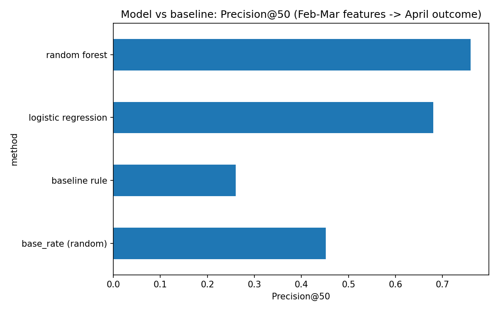
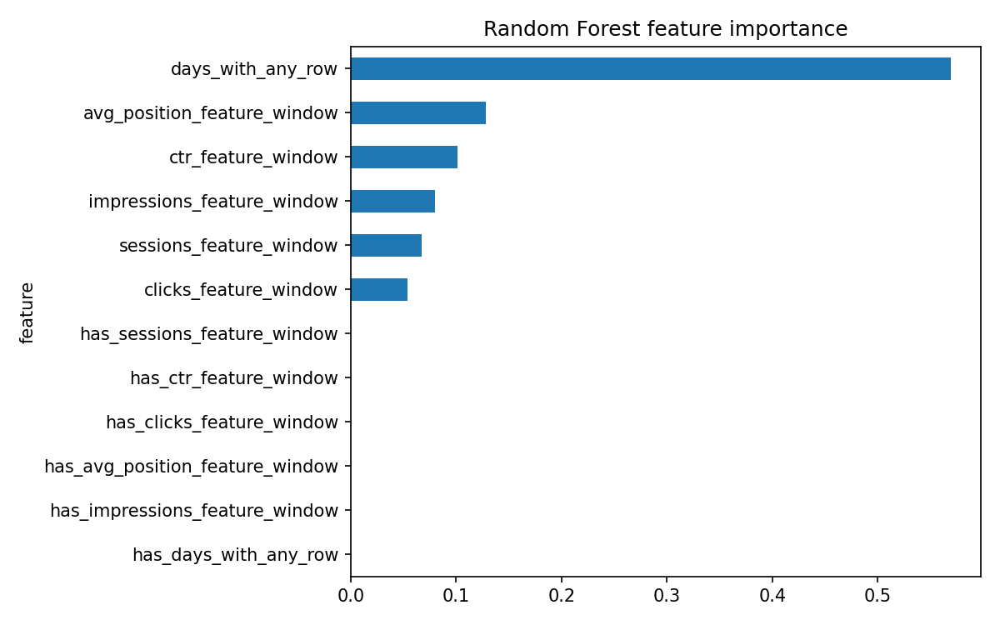

A future-observed prediction model for refresh and content-opportunity scoring, built and honestly validated on real search performance data — not a proxy label, not a hand-tuned rule.
Content teams cannot manually review every page every week, so this work asks a narrow, decision-shaped question: given a fixed weekly review capacity, which pages should be prioritized for refresh, expansion, or protection? Using 60 days of prior performance history (Feb–Mar 2026) to predict what actually happened in the following 30 days (April 2026) — a genuine future outcome, not a same-window proxy — a Random Forest classifier reached 0.76 Precision@50, beating both a hand-written baseline rule (0.26, which scored below random) and Logistic Regression (0.68). The model's ranked output feeds a reason-coded action queue for human review. Every claim below is scoped to pages that already had measurable search visibility going into April, and the paper names six concrete limitations rather than smoothing over them.
The decision this work supports: an SEO or content strategist deciding where to spend limited review time first, out of a large page inventory, this week. The unit of analysis is one content page — a content_id × client_id pair — scored using 60 days of prior history and labeled by what was actually observed in the following 30 days.
Every earlier notebook in this internship (ML‑02 through ML‑10) used the starter dataset's is_declining_label — a proxy computed from the same window it was predicting, not an observed future outcome. This capstone's central methodological upgrade Observed is replacing that proxy with a label built from data the model never sees at prediction time: features come strictly from February–March, and the label comes strictly from April.
Release: FlyRank/internship-warehouse (Hugging Face, gated, build v20260703). Table: fact_content_daily_performance, partitioned by month.
| Window | Range | Rows | Role |
|---|---|---|---|
| Feature window | 2026‑02‑01 → 2026‑03‑31 | 7,355,108 + 9,841,378 | 60 days of history → 349,411 pages |
| Target window | 2026‑04‑01 → 2026‑04‑30 | 10,424,730 | 30 days of outcome → 362,172 pages |
Joining both windows (inner join — a page needs history and an observed outcome to be labeled) yields 331,436 pages. Of those, only 187,778 (56.7%) had any impressions in the feature window and therefore get a computable percent-change label — the rest are excluded by design, not by bug, since "percent change from zero" isn't a meaningful number. Decision-support Base rate on the resulting labeled set: 0.527.
Label definition: is_declining = 1 when the April daily impression rate is more than 10% lower than the Feb–Mar daily rate — matching the FlyRank research paper's own "Down: >10% decline" definition. Rates (not raw totals) are compared because the two windows are different lengths (59 vs. 30 days).
Public-safe note: no client names, domains, URLs, private queries, or credentials appear anywhere in this paper or the underlying notebooks.
Split by client_id (GroupShuffleSplit, 75/25), not by row — 35 training clients, 12 test clients, zero overlap confirmed. This prevents the model from simply memorizing a client's typical performance level, which produced an 8-point score inflation in an earlier notebook when a row-level split was tested instead.
The same rule-based baseline used since ML‑07 (a "low visibility days" + "low CTR for position" flag), rebuilt on this table's actual fields. Its CTR benchmark by position bucket is computed on the training split only, to avoid leaking test information into the rule itself.
Six numeric features, all computed strictly within the Feb–Mar window: days with any tracked activity, total impressions, total clicks, average search position, session count, and click-through rate — plus missingness flags for each.
Per FlyRank's leakage-hunting checklist, the validation harness was stress-tested by deliberately injecting a column derived directly from the label. Precision@50 jumped from 0.76 to 1.0 Observed — confirming the harness correctly detects leakage when it's present, and by extension, that the real (non-leaky) result below is not an artifact of a broken test.
All four methods evaluated on the identical held-out client split:
Precision@50 — of the top 50 pages ranked by each method, the fraction that actually declined in April.

Random Forest reaches 0.76 Precision@50 against a 0.452 base rate and a 0.26 rule baseline. This reverses an earlier internship finding (ML‑08), where Logistic Regression beat Random Forest 0.700 to 0.500 on the smaller starter dataset with the proxy label. Directional A plausible explanation: a larger dataset with a genuinely future-observed label rewards the non-linear feature interactions Random Forest can capture, more than the smaller current-window-labeled slice did — this is a hypothesis prompted by the data, not a proven cause.
The baseline rule scoring below the random base rate is not a one-off: it is the second time this exact pattern has appeared in this internship (also seen on the starter CSV in ML‑08/09). Observed A rule tuned by eyeballing a small hand-reviewed sample does not reliably generalize under honest, held-out evaluation.

Per the claim ladder used throughout this internship: every claim above is observed, measured, and directional at most. Not claimed This is cross-sectional, non-experimental data — refreshing a flagged page is not claimed to cause recovery, and nothing here reproduces or predicts a search engine's ranking algorithm.
Model scores feed a reason-coded action queue rather than an automated decision. On the held-out test set (44,238 pages):
| Action | Pages | Share |
|---|---|---|
| Monitor | 39,280 | 88.8% |
| Rewrite title / meta | 3,391 | 7.7% |
| Protect / monitor (strong performer) | 1,567 | 3.5% |
| Review for refresh | 0 | 0% |
A second honest limitation in the queue itself: confidence is labeled "low" for nearly every page — even ones with tens of thousands of impressions — because the confidence rule requires session data that most pages don't have (GA4 coverage is sparse across this warehouse). A stronger design would compute confidence from search-console volume alone when session data is absent.
Governance guardrails carried through from ML‑10: no auto-publishing, no client-facing claims, no evaluating writers — this queue is an input to human review, not a replacement for it.
work/notebooks/capstone.ipynbwork/notebooks/work/outputs/ and work/figures/Built on the FlyRank ML Internship dataset — flyrank.ai.